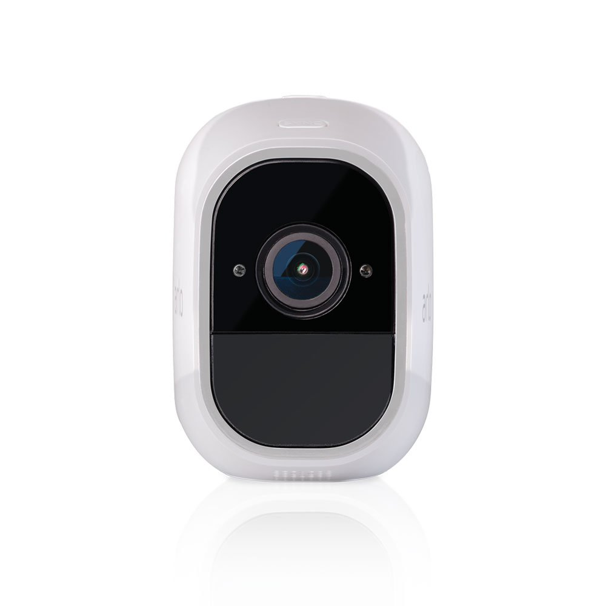
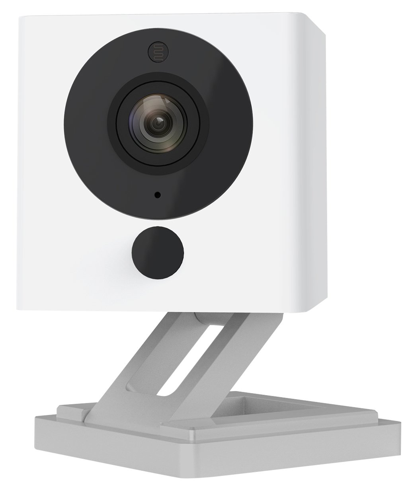

Welcome to the smart home store for smart cameras, where you'll find great prices on a variety of cameras to monitor and protect your home!
Smart Home | Cameras

Arlo Pro 2 – (1) Add-on Camera
Price : $186.45
- 1080p HD : High quality video with sharper and brighter details.
- Activity Zones : Highlight areas in your camera's view where you want to receive motion alerts
(Available when plugged in and used indoors).
- Optional 24/7 Continuous Video Recording : Upgrade to keep nonstop recordings in the cloud
(Available when plugged in and used indoors)
- Arlo Smart adds powerful intelligence to your Arlo cameras. Customize alerts to detect people,
specific zones, and contact emergency responders right from your smartphone’s lock screen

Wyze Cam 1080p HD
Price : $25.89
- Motion/Sound Recording with Free Cloud Storage - Wyze Cam can automatically record
a 12-second video clip when motion or sound is detected .
- See in the dark - Night vision lets you see up to 30’ in absolute darkness using 4 infrared (IR) LEDs.
Note: IR does not work through glass windows.
- Share with those who care - One Wyze Cam can be shared with multiple family members so everyone can have
access to its live stream and video recordings.

Arlo Pro
Price : $248.00
- 100 percent Wire free : Free of power cords and wiring hassles.
- Weather resistant : Arlo Pro cameras are Weather resistant so you can place them anywhere indoors and out.
- Rechargeable Batteries : Arlo Pro cameras include rechargeable batteries that support fast charging.
Focus range (ST).
- Fixed focus (2 ft. to infinity). Operating temperature- (-4 degree) to 113 degree F ( 20 c C to 45 degree C).